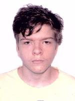

About Myself

Hi, my name is Saulo, I'm 23 years old. I am from Natal and moved here in Recife by myself. Let me explain how I ended up in Recife.
In the end of December, after some stuff that happened, I needed something to expand my knowledge. I decided that I wanted to have a degree.
So, I looked at some universities, but I couldn't find any suitable options, especially ones that didn't require the ENEM exams. After that, I and my uncle saw through some options that would be affordable and in a good environment.
We ended up choosing Brasília.
But nothing good in life comes easy. So, after a year in Brasília and some problems at the university, I realized that it wasn't what I wanted.
But at the end of the second semester, my uncle offered me an opportunity to finish my studies in Recife.
I saw that it would be a good way to learn more about life and, for the first time, I was going to live by myself.
So about my characteristics, I'm not good at anything, but I try my best to find something that I could be good at.
 Linkedin
Linkedin
 Github
Github